Autor: Manuel Gómez Ruiz
Asignatura: Despliegue de Aplicaciones Web
Fecha: 11/02/2025
Práctica 6.1: Dockerización del despliegue de una aplicación Node.js
El objetivo de esta práctica es aprender a dockerizar y desplegar una aplicación Node.js que gestiona un libro de direcciones con PostgreSQL como base de datos.
Conexión por SSH
El primer paso es establecer una conexión SSH con nuestra máquina virtual, las conexiones SSH se utilizan para acceder de forma segura a otra máquina de manera remota a través de una red, para ello abre una terminal y escribe ssh NombreUsuario@SuIp.
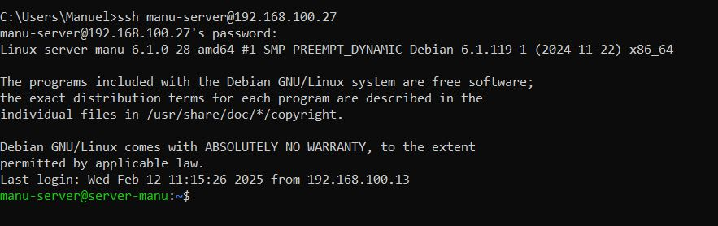
Despliegue con Docker
Para comenzar con la práctica, vamos a clonar un repositorio con el código fuente de una aplicación y el archivo Dockerfile, ejecutando el comando git clone https://github.com/raul-profesor/DAW_practica_6.1_2024.git.
Este comando descargará todo el contenido del repositorio en nuestro equipo, permitiéndonos modificar y construir la aplicación.
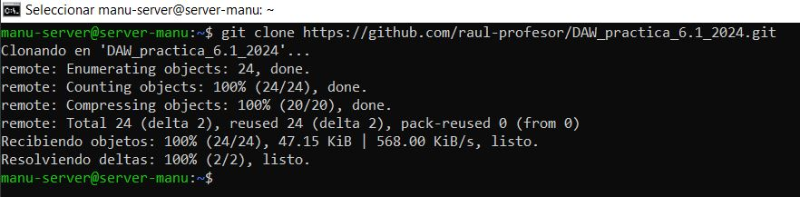
Antes de seguir adelante, se deberá tener instalado Docker en el sistema. Para ello, ejecuta el comando sudo apt install -y docker.io.
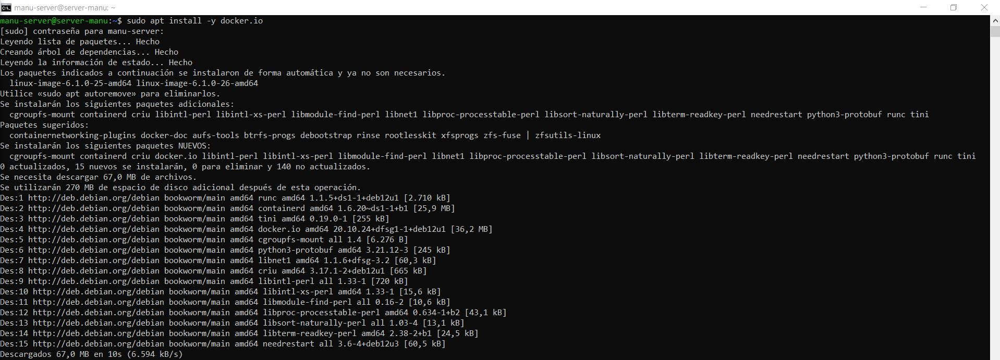
Configuración dockerfile
Cuando se clone el repositorio, ya podremos navegar hasta su directorio con cd y listar su contenido con ls. Entre los archivos, encontraremos el Dockerfile.
Si mostramos su contenido con cat, veremos que está incompleto y necesita modificaciones para que funcione correctamente.
____ node:18.16.0-alpine3.17
____ mkdir -p /opt/app
_____ /opt/app
____ src/package.json src/package-lock.json .
___ npm install
____ src/ .
_______ 3000
___ [ "npm", "start"]
Así que vamos a acceder al archivo Dockerfile con nano y a modificarlo.
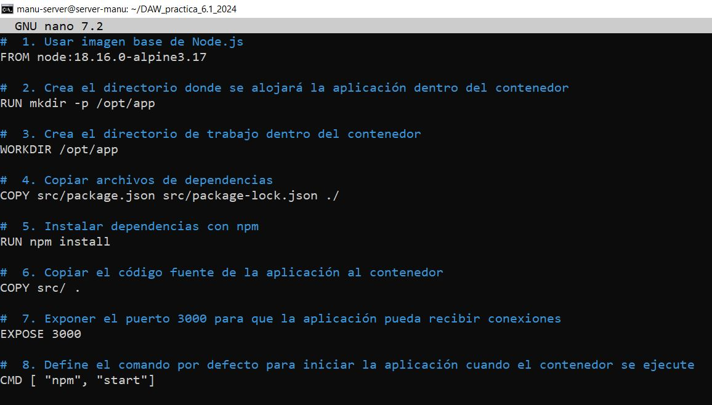
Construcción de imagen
Una vez corregido el Dockerfile, procedemos a construir la imagen del Docker. Para ello, ejecutamos el comando: sudo docker build -t librodirecciones ..
Este comando construirá la imagen asignándole el nombre librodirecciones en el directorio actual.
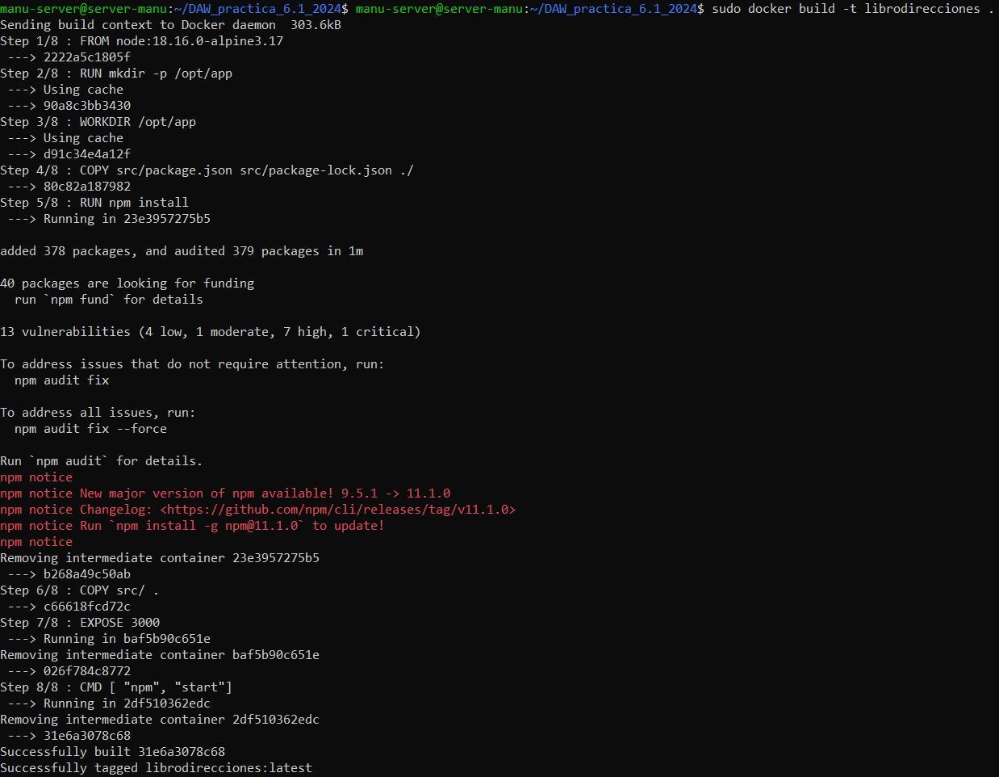
Ejecución del contenedor
Ya construida, podremos ejecutar la aplicación dentro de un contenedor con el comando docker run -p 3000:3000 -d librodirecciones.
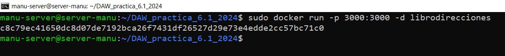
Este comando inicia un contenedor en segundo plano basado en la imagen librodirecciones, asignando el puerto 3000 del contenedor al puerto 3000 de nuestra máquina.
Prueba desde el navegador
Después de iniciar el contenedor, intentamos acceder a la aplicación mediante su dirección IP y puerto.
Para ello, usa el comando ipconfig para visualizar tu IP, en mi caso es la 192.168.100.27.
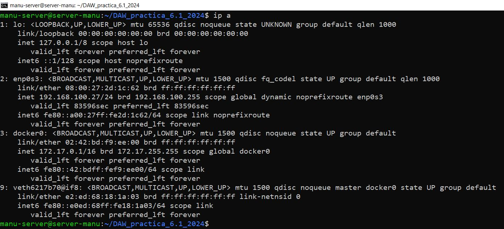
Accede a tu máquina, abre el navegador e intenta acceder a http://TU-IP:3000, si te devuelve el mensaje No se puede acceder a este sitio web, abre el puerto 3000 con el comando sudo ufw allow 3000 y vuelve a intentarlo.
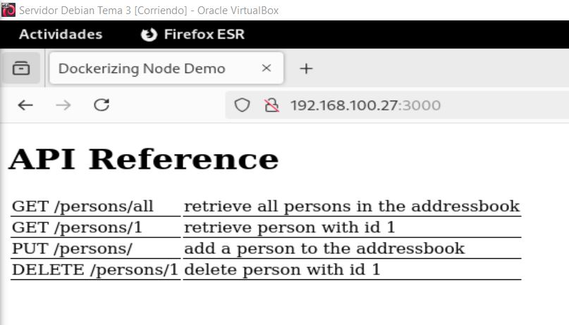
Docker Compose
Docker Compose es una herramienta para gestionar aplicaciones multicontenedor, que sirve para iniciar y detener múltiples contenedores en secuencia, conectar contenedores utilizando una red virtual, construir o descargar imágenes de contenedores, etcétera.
Es posible que no lo tengas instalado, para comprobarlo introduce el comando docker-compose --version y si no encuentra la orden escribe sudo apt install -y docker-compose.
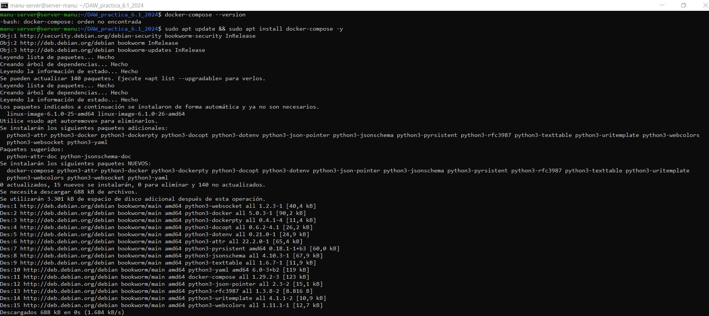
Docker Compose utiliza un archivo de definición YAML, que es un formato de serialización de datos para la configuración de aplicaciones.
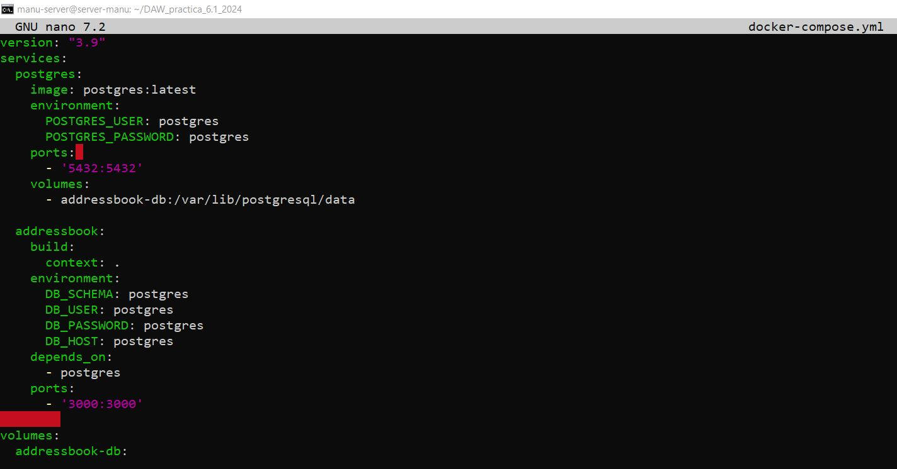
Ya que el puerto 3000 está ocupado y lo estamos usando de nuevo en el archivo docker-compose, para el servicio adressbook asegurate de parar el contenedor anterior librodirecciones para evitar problemas, comando sudo docker stop librodirecciones.
Para levantar nuestra aplicación basada en contenedores tendríamos que utilizar el comando docker-compose run adressbook npm run migrate, el servicio adressbook es una base de datos definida en el archivo docker-compose.yml y el comando npm run migrate se usa para ejecutar migraciones de base de datos en una aplicación Node.js.
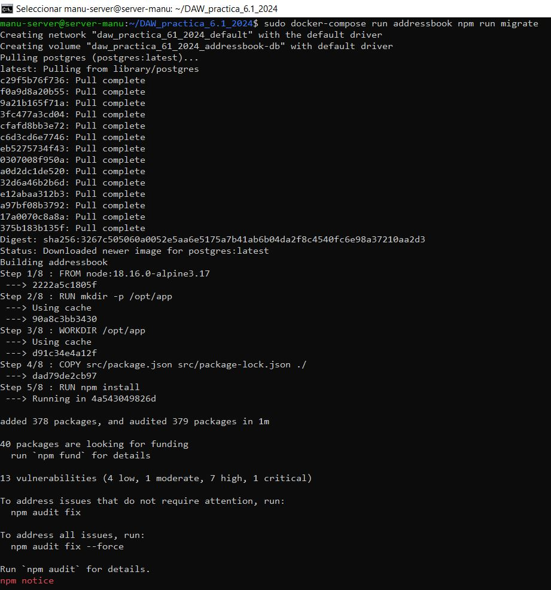
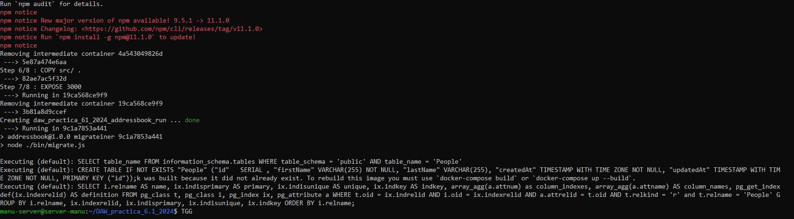
Después utilizaremos docker-compose up --build -d, que construye las imágenes de los servicios definidos en el archivo docker-compose.yml y levanta los contenedores en segundo plano.
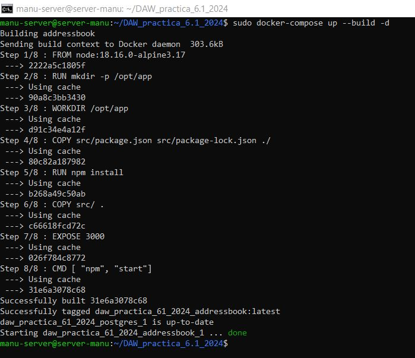
Comprobar el estado de los contenedores, comando docker compose ps, este comando muestra los contenedores que están siendo gestionados por Docker Compose y su estado actual.
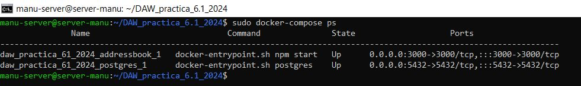
Y por último usamos docker compose run addressbook npm test, que ejecuta las pruebas de la aplicación dentro del contenedor adressbook.
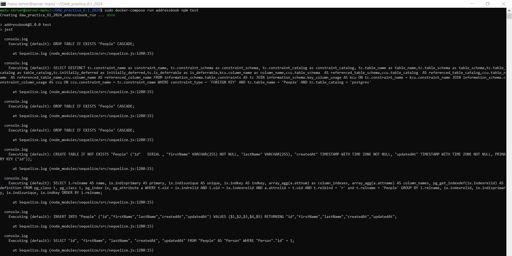
Resultado del test
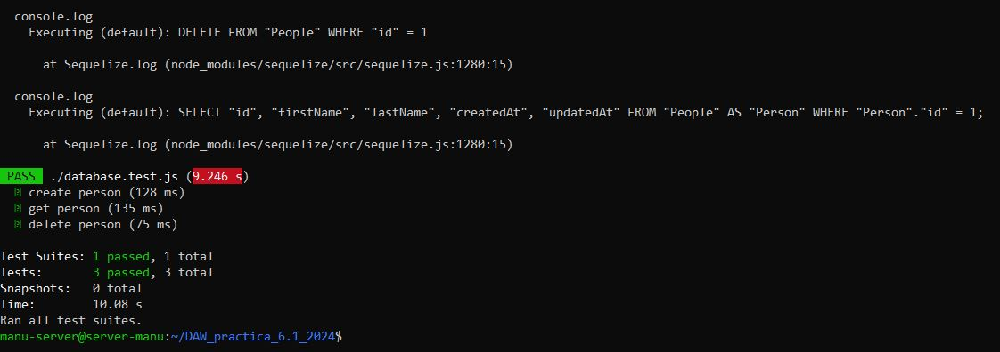
Tarea
Probad que la aplicación junto con la BBDD funciona correctamente. El funcionamiento de la API es:
Para ello desde la terminal de nuestra máquina física hacemos las siguientes peticiones:
PUT /persons/añade una persona al libro de direcciones,curl -X PUT http://192.168.100.27:3000/persons -H 'Content-Type: application/json' -d '{"id": 2, "firstName": "Alfonso", "lastName": "Mestaza"}'.
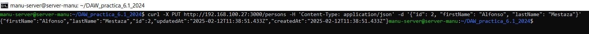
GET /persons/allmuestra todas las personas en el libro de direcciones,curl -X GET http://192.168.100.27:3000/persons/all -H 'Content-Type: application/json'.
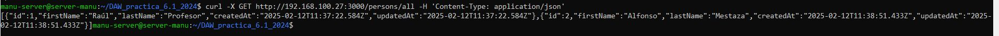
GET /persons/1muestra la persona con el id 1,curl -X GET http://192.168.100.27:3000/persons/1 -H 'Content-Type: application/json'.
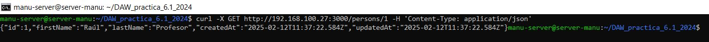
DELETE /persons/1elimina la persona con el id 1.
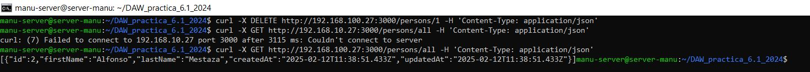